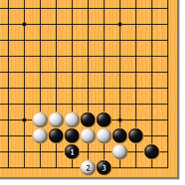
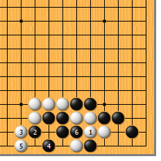
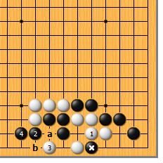
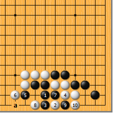
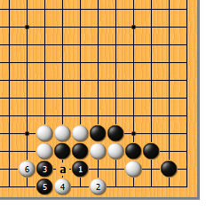
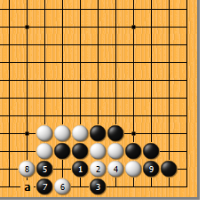
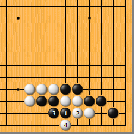

|  |  | |
| 图1 此形似简实难。黑1立，是此时的要点，白2跳，也是很强的应对。黑3靠，很难发现的妙手！ | 图2 白1如粘，黑2要扳。白3挡，黑4做眼，好。白5立，黑6挤，对杀正好快一气。
| |
|  |  | |
| 图3 白1粘，黑2扳时，白3如点，黑怎么办呢？其实，黑4可长，白如a位断，黑可于b位吃白的接不归。黑*子正好大放异彩。 | 图4 黑1、白2交换后，黑3如挡，被白4粘就麻烦了。很显然，这样一来，黑3和白2的交换就亏了。黑5扳，白6就挡，黑7挤，白8靠，以下黑9、白10，成劫。黑7如于8位做眼， 白a位立，打劫的结果不变。
| |
|  |  | |
图5 黑1、白2后，黑3如果马上扳，大随手！白4点，时机正好，黑5如挡，白6收住气，对杀黑正好慢一气。黑5如于6位长，白a位的断此时可以成立。 | 图6 黑1时，白2如挡，黑3可先手打。白4粘，黑5扳长气。白6如点，黑7挡，白8时，黑转身于9位收气，对杀可胜。不过，白可于a位先手拔黑两子，此变化可以作为实战手段使用。
| |
|  | 您的高见 | |
图7 黑1、3扳粘，等于自杀。白4扳，黑显然慢一气。这可是常识哦！ |